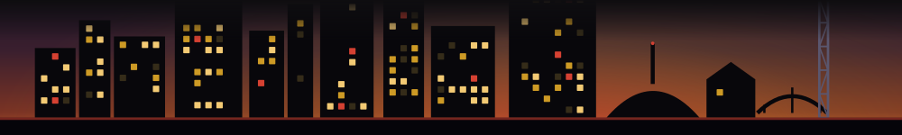

Shakespeare in the Park: A Midsummer Night's Dream
Centennial Park, Midtown
Nashville Shakes does its inventive thing with the Bard on free summer nights in the park - bring a blanket, skip the bleachers.

Most of what we track is here then gone. But some windows have a rhythm -- the Wednesday residency, the first-Friday crawl, the pop-up that returns every patio season. This is the standing index of those, grouped by when they come around. It rebuilds itself from what the machine actually sees, so a window that stops showing up drops off, and a new rhythm appears the week it settles in.
Standing weekly windows -- the residencies, weeknight pop-ups and recurring nights you can plan your week around.
Nashville Shakes does its inventive thing with the Bard on free summer nights in the park - bring a blanket, skip the bleachers.
A $149 art-meets-dinner concept running select weekend nights at Fairlane - one of Nashville's more genuinely weird upscale experiences.
Weekly Friday market at The Davis General - local goods, lunch-hour timing, the kind of low-key ritual worth building a Friday around.
Saturday morning farmers market inside Franklin's historic mill complex - early-bird produce and local makers before the weekend crowds hit.
Monthly markets, first-Friday crawls, full-moon parties -- the ones that come around once a month.
A 90s-themed speakeasy pop-up that closes mid-September - less than a month left to rewind.
One-day beer festival with 14% off tickets - a month out and already discounted, which means buy now.
Patio-season pop-ups, summer series and holiday bars we have watched return -- only ones we have actually seen recur are listed here.
Grand Hyatt's rooftop cabana season closes in one week - last window to snag a private perch over the Yards.
Fairlane's summer pop-up bar has less than two weeks left - catch it before the seasonal concept closes out.
A seasonal rooftop bar concept at the Factory at Franklin - two weeks left before it folds for the season.
Spooky-season strings inside NMAAHM on the same Oct 23 evening - one night, no second chance.
Two-night holiday strings at the Conrad - tight window right before Christmas, hotel venue keeps it upscale.
A holiday pop-up bar announced early enough to bucket-list now - Sonny's transforms for the season.
Seven-night Halloween bar crawl through Nashville - seasonal, ticketed, and the cheapest thing on this list at $15.
This board does not ping you. It is a pull surface on purpose -- no alerts, no notifications. It just sits here, current, for when you want to know what keeps coming back. The way to catch the one-time windows too -- the here-then-gone things that never repeat -- is the Thursday list: the week's time-limited Nashville windows, in your inbox before they close.
Get the Thursday list, free →Every window here is confirmed current: it is in the live discovery feed right now, and either states its own recurring cadence or has been seen to recur across multiple weeks. Windows we have only seen once, or that name no cadence, are held back rather than guessed. Looking for what is open or closing this week? See the conditions board. The full record is in the archive.